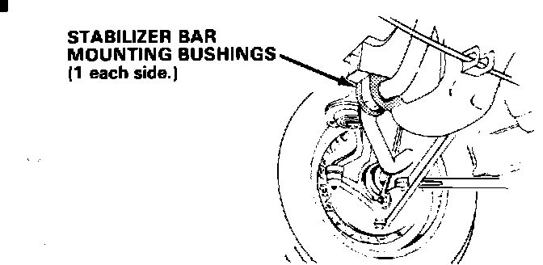
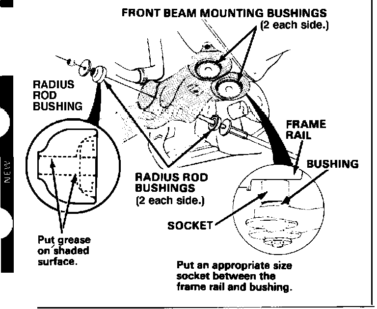

Front Suspension - Clunking or Creaking Noise
88acura01April 25, 1988
YEAR MODEL APPLICATION
'86-88 LEGEND ALL
87-010
Front Suspension Noise (Supersedes 87-010, dated May 26, 1987)
SYMPTOM A clunking or creaking noise from the front suspension when going over bumps, or on acceleration or braking (usually worse when the suspension is cold).

CORRECTIVE ACTION
1. Remove the stabilizer bar mounting bushings (see page 18-14 of the appropriate Legend Service Manual), and lubricate the inside diameter with Dow Corning 111 compound then reinstall the bushings.

2. Remove the radius rod bushings (see page 18-14 of the approriate Legend Service Manual), and lubricate the inside diameter with Dow Corning 111 compound; then reinstall the bushings.
NOTE:
^ Do not lubricate the outside of the bushing.
^ Excess lubrication may cause the radius rod bushing to move out of position.
3. Remove the front beam mounting bushings one at a time and lubricate them as described below:
^ Remove one bushing bolt and loosen the other.
^ Pull down on the front beam and place an appropriate size socket between the frame rail and the bushing that is to be removed.
^ Tighten the remaining bolt until the socket forces the bushing out.
^ Lubricate the bushing with Dow Coming 111 compound, push the bushing back into place, and loosely reinstall the bolt.
^ Repeat this procedure for the other three bushings.
^ After the bushings have been lubricated and reinstalled, torque the bolts to 75 N-m (7.5 kg-m, 54 ft.lbs.).
4. Road test the vehicle to verify that the problem has been corrected.
NOTE: For the location of a local distributor of Dow Coming 111 compound, call Dow Coming Customer Relations at 1-800-248-2481.
WARRANTY CLAIM INFORMATION
Operation number: 416030 (Applies to removal and lubrication of stabilizer mount, radius rod, and front beam mounting bushings.)
Flat rate time: 1.4 hours
Failed P/N: 50235-SD4-000
Defect Code: 042
Contention Code: B07